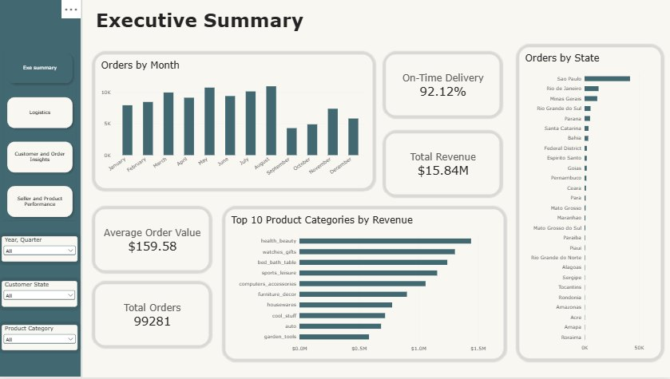
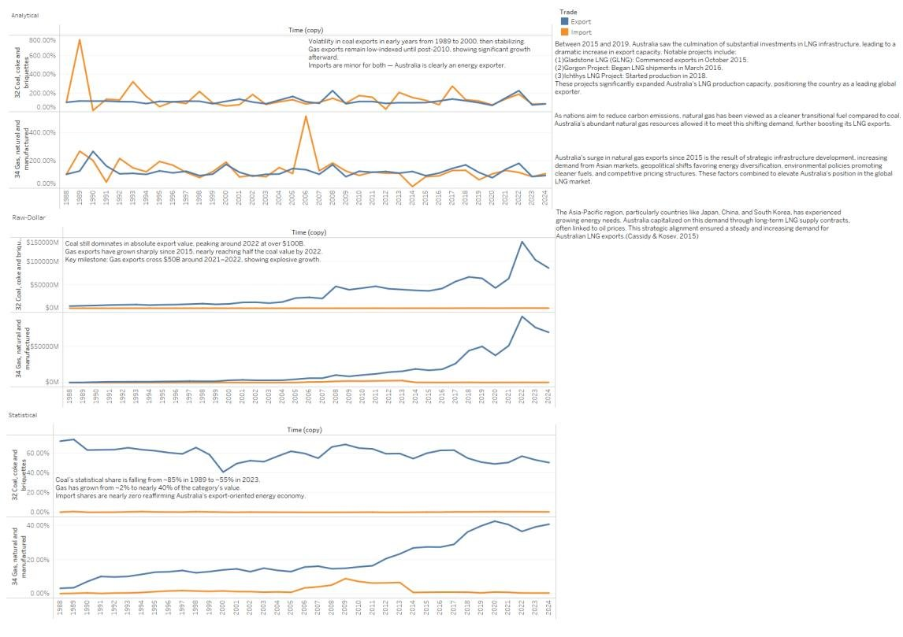
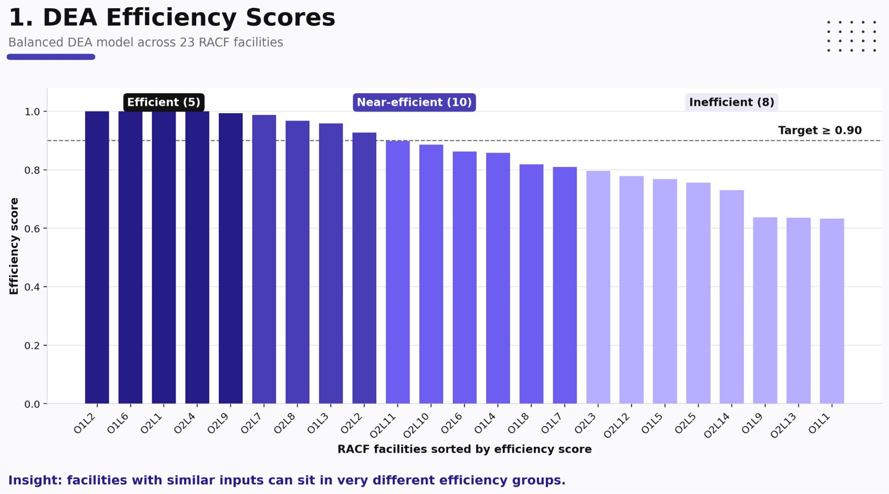

Hi, I'm Ken. I like taking a messy dataset and working out what it actually says. Most of my work is in SQL and Power BI, with Tableau and Python when the problem needs them. I interned as a data analyst at KBZ Bank, and these are some of the projects I've done since.
Projects
E-commerce performance dashboard
Power BI, DAX, Power Query

The executive summary page. The report has four pages.
I built this report on Olist's public data: about 99,000 orders from a Brazilian online marketplace, split across nine tables. I modelled the relationships and wrote 18 DAX measures for delivery, revenue, customer and seller KPIs.
Delivery turned out to be mostly fine, with 92% of orders arriving on time. The bigger issue was that only 3% of customers ever came back for a second order.
-- top sellers in each stateWITH seller_revenue AS (
SELECT s.seller_state, s.seller_id,
SUM(i.price + i.freight_value) AS revenue
FROM order_items i
JOIN orders o ON o.order_id = i.order_id
JOIN sellers s ON s.seller_id = i.seller_id
WHERE o.order_status = 'delivered'
GROUP BY s.seller_state, s.seller_id
)
SELECT *,
DENSE_RANK() OVER (
PARTITION BY seller_state
ORDER BY revenue DESC
) AS state_rank
FROM seller_revenue;
One of the nine queries in the project
Same data, but this time I loaded it into PostgreSQL with a proper schema, checked it for quality problems, and answered nine business questions in SQL: revenue trends, cohort retention, customer segments, seller rankings and how long people wait before ordering again.
The clearest result: late orders average under 3 stars, compared with about 4.2 for orders that arrive on time. Revenue is also concentrated, with fewer than 20% of sellers making 80% of it.
Lower is better. SARIMA had the lowest error in every state.
I cleaned the ABS monthly retail turnover series for three states and compared three forecasting models on months held back from training. Retail has a strong yearly pattern and steady growth, which is why SARIMA did well here.
A simple seasonal baseline was hard to beat in New South Wales, where Holt-Winters did slightly worse than it. That's the reason I always check models against a baseline first.
Australia's trade over 37 years
Tableau, Excel

Exports and imports by product category, 1988 to 2024
A set of Tableau dashboards on ABS import and export data for ten product categories, looking at dollar value, growth and share of the total.
The biggest shift was in energy. Gas went from about 2% of energy exports to nearly 40%, while coal's share dropped from around 85% to 55%.
Benchmarking aged care facilities
Python, SciPy, pandas, Excel

Efficiency scores for 23 facilities, with names removed
Our capstone with two aged care providers. We compared 23 facilities on how well they turned staffing into quality and resident experience, using Data Envelopment Analysis and adjusting for how complex each facility's residents were.
Five facilities came out as the benchmark. The two weakest needed roughly 40% more output to catch up with similar peers.
Team of six. I wrote the DEA model and the resident acuity index.
Smaller projects
Fashion image recommendations. A TensorFlow model that suggests similar products from a photo, trained on 44,000 items. 90% of its top three suggestions are the right product type.
Fake news detection. LSTM and SVM models on 22,730 headlines. Adding the news source to the model lifted accuracy from 77% to 82%.
Data cleaning app. A Streamlit tool for profiling and cleaning messy CSV and Excel files without writing code.
Tools I use
BI: Power BI (DAX, Power Query, data modelling), Tableau, Excel